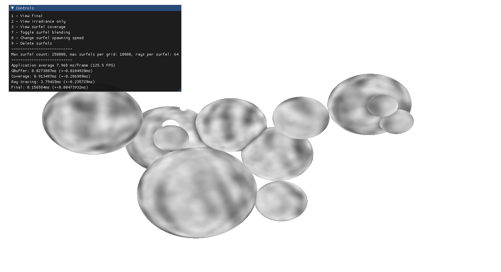

Bachelor's thesis: Global Illumination Based on Surfels Using WebGPU
Thesis, C++, WebGPU
Designed and built a system to explore Surfel-Based Global Illumination. I
developed the entire rendering pipeline and GI system using C++ and a WebGPU framework,
gaining
experience with real-time rendering, low-level optimization, and debugging complex
graphics systems.

Surfel global illumination in progress

Surfel coverage texture